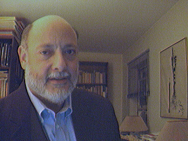
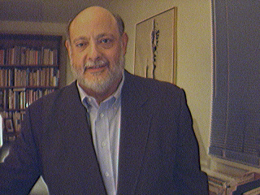

STEPHEN P. STEINBERG
Brief Professional Biography
As of April 2, 2003
Dr. Stephen P. Steinberg
is currently Executive Director of the Penn National Commission on Society, Culture and Community, and its national program on public discourse and community, the Penn Public Talk Project. Comprised of 48 leading scholars, political figures, and shapers of public opinion from the U.S. and abroad, the Commission was conceived and convened under the leadership of University of Pennsylvania President Judith Rodin and Dr. Steinberg to explore the alleged deterioration of public culture and political discourse, the failures of leadership, and their impact on the fragmentation of American communities. Since 1990, Dr. Steinberg has also served as Assistant to the President at the University of Pennsylvania, working closely with Presidents Sheldon Hackney, Claire Fagin, and Judith Rodin as a senior policy analyst, writer, and advisor on academic affairs, faculty relations, campus issues, University policy development, and national educational and cultural issues.In 1997-98, he directed the 21st Century Project for the Undergraduate Experience, Penn's strategic initiative to enhance undergraduate education, coordinating major innovations in undergraduate curriculum, interdisciplinary studies, student services, residential living, information technology, and inter-school collaboration, and served as a member of the Council of Undergraduate Deans. This culminated more than a decade of Dr. Steinberg’s central involvement with Penn’s Provosts and four undergraduate schools in efforts to enhance Penn’s undergraduate curriculum and educational experience.
Since coming to Penn as an Assistant Dean in the School of Arts and Sciences in 1978, Dr. Steinberg has served in a wide variety of academic administrative capacities gaining broad experience in undergraduate and doctoral education, continuing education and entrepreneurial masters program development, campus cultural issues and policies, and national educational issues. He has worked extensively on strategic planning, institutional restructuring, the maintenance of educational standards in undergraduate and doctoral programs, opening graduate study to adult and non-traditional students, strengthening campus community and dialogue, gender equity, racial and sexual harassment, student conduct policies, and freedom of expression in the University community.
A specialist in twentieth century European philosophy, Dr. Steinberg earned his Ph.D. from Penn in 1989 and master's degrees from the New School for Social Research (in philosophy) and Columbia University (in journalism), after receiving his bachelor's degree "with distinction" from the University of Michigan. A Lecturer in Philosophy at Penn since 1981, he is also an active affiliated faculty member at the Solomon Asch Center for the Study of Ethnopolitical Conflict and the Institute for Strategic Threat Analysis and Response. His teaching, research, and writing interests include the philosophy of nationalism; public discourse, culture, and community; phenomenology, existentialism and postmodernist thought; psychoanalysis; and contemporary issues in higher education. He is co-editor and a contributor to Public Discourse in America: Conversation and Community in the Twenty-First Century (Philadelphia: University of Pennsylvania Press, 2003). A frequent interviewee on contemporary culture, public discourse, and civil society for both print and broadcast media, Dr. Steinberg was a featured expert commentator for USA Today during the 2000 presidential debates.

RESUME OF PROFESSIONAL CAREER
Executive Director, Penn National Commission on Society, Culture and Community, University of Pennsylvania, 1996-present.
[http://www.upenn.edu/pnc]Interim Director, 21st Century Project for the Undergraduate Experience, University of Pennsylvania, 1997-98.
[http://www.upenn.edu/provost/21st/index.html]Assistant to the President, University of Pennsylvania, 1990-present.
Lecturer, Department of Philosophy, School of Arts and Sciences, University of Pennsylvania, 1981-present.
Administrative Fellow, Offices of the President and Provost, University of
Pennsylvania, 1987-90.• Coordinator, Provost’s Council on Undergraduate Education, 1987-92.
• Coordinator, Provost’s Council on Undergraduate Admissions, 1987-92.
• Coordinator, Council of Undergraduate Deans, 1987-92.
• Acting Executive Assistant to the Provost, Spring 1990.
• Coordinator, Council of Graduate Deans, 1987-90.
• Coordinator, Planning Committee on Undergraduate Education, 1987-89.
• Coordinator, Planning Committee on Doctoral Education, 1987-89.
Assistant Dean, School of Arts and Sciences, University of Pennsylvania, 1978-87.
• Director, Master of Arts and Professional Studies Program, 1985-87.
• Coordinator, Faculty Council on Undergraduate Education, 1986-87.
• Assistant Director for Graduate Programs and Administration, College of General Studies, 1982-87.
• Academic and Career Advisor, College of General Studies, 1978-87.
Development Officer and Adjunct Instructor of Humanities, Pratt Institute, New York, N.Y., 1977-78.
Account Associate, Bruce Porter Co., Inc., New York, N.Y., 1975-76.
Account Executive, Joseph Dermer and Assoc., Inc., New York, N.Y., 1974-75.
Staff Writer, Medical Tribune, Inc., New York, N.Y., 1972-73.
Writer, United States Information Agency, Washington, D.C., Summer 1971.
News Writer, WGN-TV and Radio, Chicago, Illinois, Summer 1970.
EDUCATION
Ph.D., Philosophy, University of Pennsylvania, 1989.
M.A., Philosophy, New School for Social Research, 1982.
M.S., Journalism, Columbia University, 1972.
A.B., Philosophy, with Distinction, University of Michigan, 1971.
American Freedom Summer Institute, Washington University, Summer 1966.
CONTACT INFORMATION
Dr. Stephen P. Steinberg
Office Phone: (215) 898-2549
Office Fax: (215) 573-6667
Email:
sps@pobox.upenn.edu
Executive Director
Penn National Commission on
Society, Culture and Community
502 Hollenback Center
3000 South Street
University of Pennsylvania
Philadelphia, PA 19104-6325
OR
Assistant to the President
Office of the President
100 College Hall
University of Pennsylvania
Philadelphia, PA 19104-6380